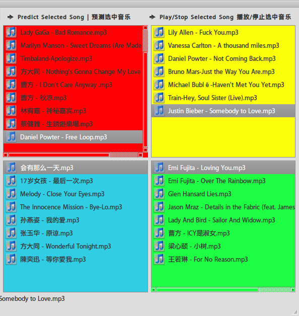

课外研究
-
计算机音乐情感分类的关键技术研究
2011 年 7 月开始暑假我一个人呆在学校独立研究这一块领域的东西。查阅了大量国内外文献书籍,从 0 开始完全自学摸索,关键问题涉及 数字信号处理、情感建模、音频特征提取、机器学习等方面,并参与到开源音频处理系统 marsyas 的完善工作中,提交了数个 bug。时间仓促，我研究的内容主要是关注情感特征的提取上，在机器学习上还有很大的改进空间。2011 年 10 月中顺利结题,最后实现了一个音乐情感分类原型 MER_EX,情感识别率达到 97%。
下图为随机样本在原型MerEx(Music Emotion Recognition EXplorer)上预测的截图

注:上图四块区域(象限)的情感含义依据Thayer's Model of Mood(1989)划分
从左往右,情感由消极变化为积极，从下往上情绪强度逐渐加强。
红色区域:烦躁、愤怒、紧张为代表的情感。 黄色区域:兴奋、快乐、欢快为代表的情感。
蓝色区域:悲伤、无聊、发困为代表的情感。 绿色区域:休闲、平静、满足为代表的情感。